F1.1 To signal to other players, game officials, substitutes, team staff or spectators, what call has been made by the players involved. Note: Responsibility for all calls remains with the players.
F2.1 Signals may be made either by the players involved, or by players or non-players (eg officials) who have heard the call.
F2.2 Non-players may only signal in response to a player's call on the field.
F2.3 Non-players should also use signal 22 to indicate which team made the call, after the following calls: Foul, Violation, Retracted, Time-out, Spirit Stoppage and Stoppage.
1. FoulHold one arm straight out and chop the other forearm across the straight arm
2. ViolationHands above head forming a V, closed fists
4. ContestTwo fists bumped together in front of chest, back of hands facing outward
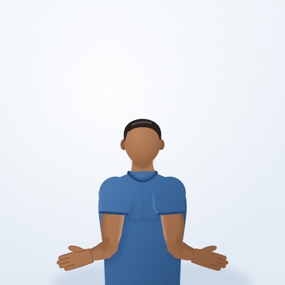
5. AcceptedForearms extended in front of body, elbows tight against torso with palms facing upwards
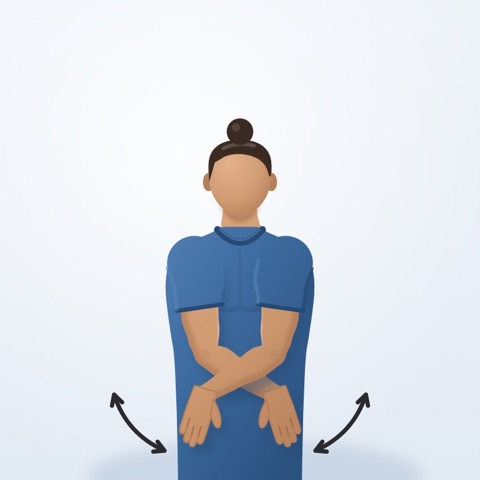
6. RetractedSweeping crossover motion with both arms extended down in front of body
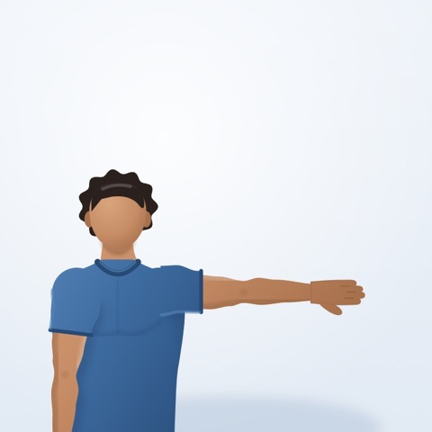
7. In/Out-of-bounds – Out of end zoneIn · OutPoint with one arm extended, flat palm, thumb parallel to fingers, towards playing field (in) or away from playing field (out)
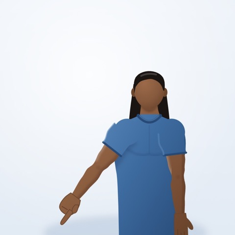
8. Disc downDownIndex finger straight arm pointing down at 45 degree
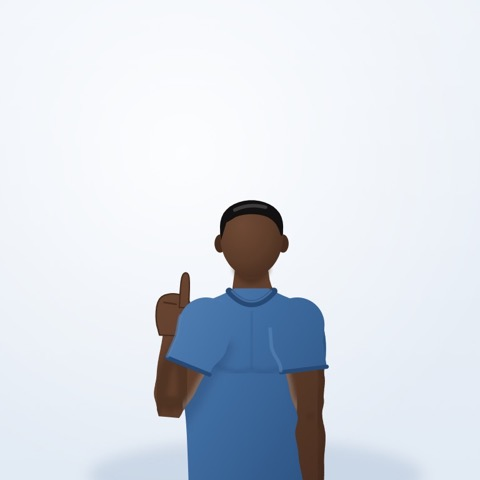
9. Disc upUpElbow down forearm vertical index finger pointing upward
10. PickArms raised, elbows bent, fists facing head
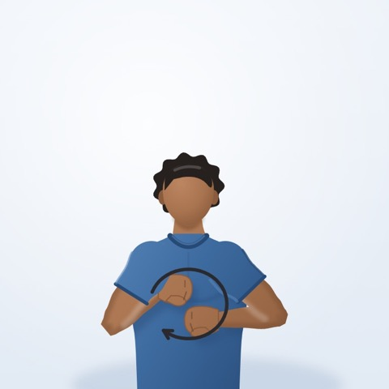
11. TravelClosed fists, rotate wrists around in a vertical circle
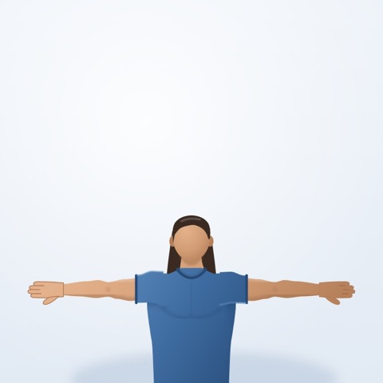
12. Marking InfractionFast Count · Straddle · Disc Space · Wrapping · Double Team · VisionArms extended to side, palms facing front
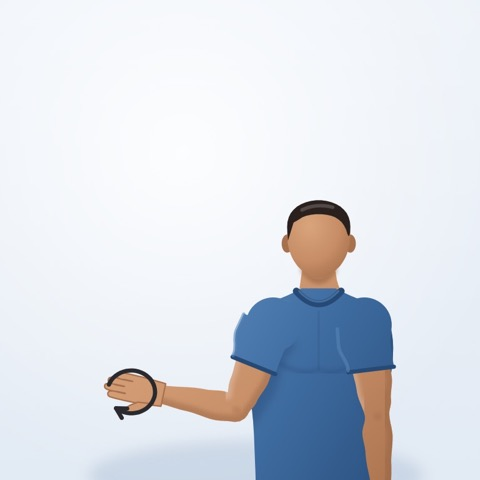
13. TurnoverRight arm extended in front of body, palm facing up and then rotate to palm facing down
14. Timing ViolationStall · ViolationTap head with open hand
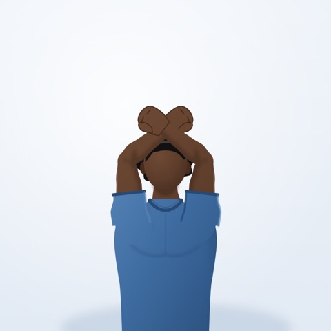
15. Offside/False StartOffside · False StartArms crossed overhead in an X, hands closed in a fist
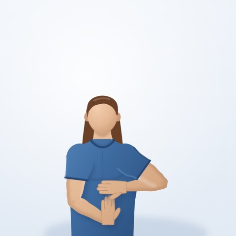
16. Time-outForm a T with the hands, or a hand and the disc
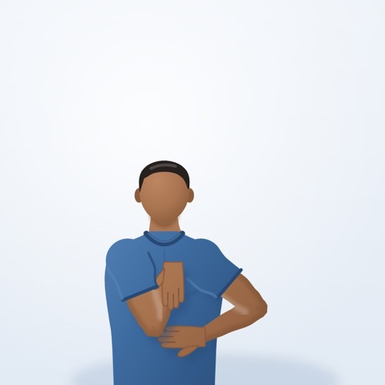
17. Spirit StoppageUpside down T formed by the hands
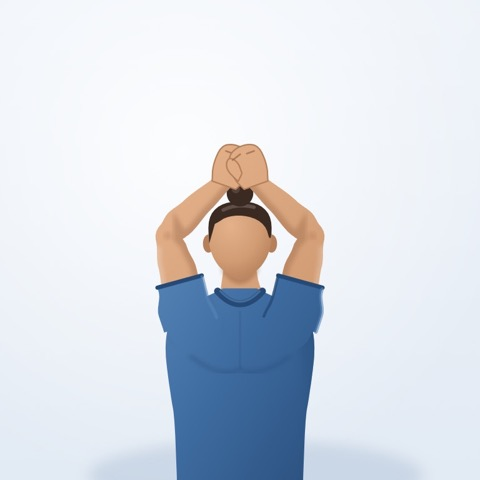
18. StoppageInjury · TechnicalHands clasped and raised above head, arms bent
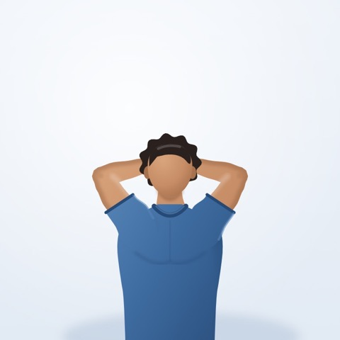
19. Personnel Ratio: Male MatchingRatio: Male MatchingHands cupped behind head, elbows out to side
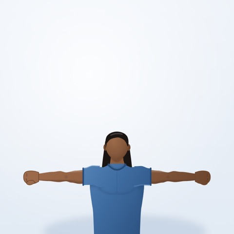
20. Personnel Ratio: Female MatchingRatio: Female MatchingArms extended to side, hands closed in a fist
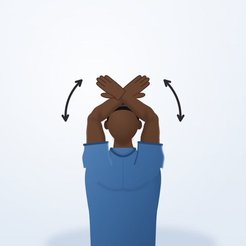
21. Play has stoppedWave both extended arms crosswise overhead
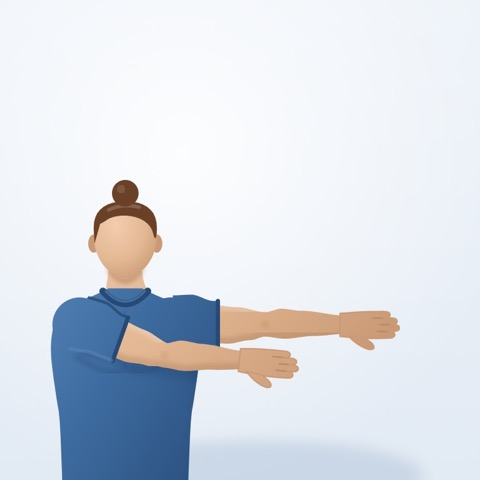
22. Who made the callCalled by Offence/DefencePointing with two arms straight out, towards the end zone being defended by the team
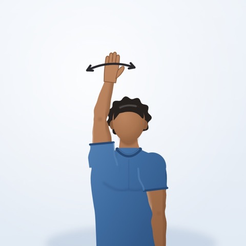
23. Did not affect the playOpen hand held above head and sweeping forward and back
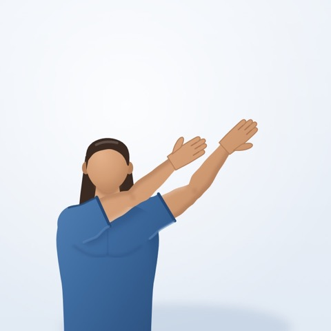
24. Match PointBoth arms pointing straight up to the left, palms facing down
In the app
Flatball Connect has all 12 calls, the full WFDF rulebook with its official
examples, the 24 hand signals and a daily rules quiz, offline and free, with no ads.